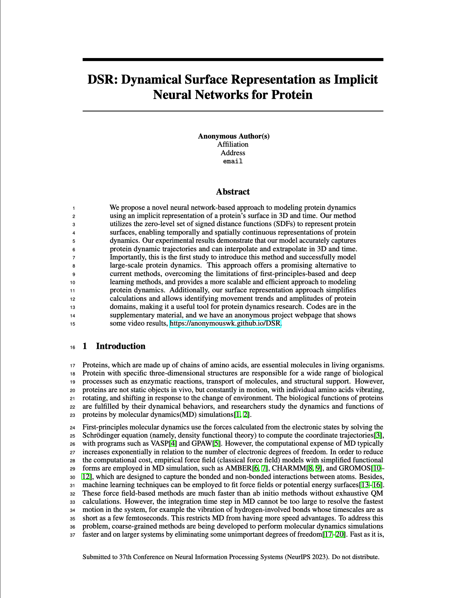

|
Overview of Our DSR.
|
We propose a novel approach to modeling protein dynamics using an implicit neural representation model of protein surface in 3D + time domain. Our method utilizes the zero-level set of signed distance functions (SDFs) to represent protein surfaces, enabling temporally and spatially continuous representations of protein dynamics. Our experimental results demonstrate that our model accurately represents protein dynamic trajectories, and has the ability to interpolate and extrapolate in 3D + time domain. Importantly, our study is the first to introduce this method and the first to successfully model large protein dynamics. This approach offers a promising alternative to current methods, overcoming the limitations of first-principles-based and deep learning methods, and provides a more scalable and efficient approach to modeling protein dynamics. Additionally, our surface representation approach simplifies calculations and allows for the identification of movement trends and amplitudes of protein domains, making it a valuable tool for protein dynamics research. Codes are in the supplementary material, and we have an anonymous project webpage that shows some video results, https://anonymouswk.github.io/DSR.
|  |
Anonymous Author(s)
Implicit Neural Representation for Protein Molecular Dynamic Shapes Under review To be published |
Here we show some videos of predicted samples, which are ground truth, prediction, comparision of ground truth and prediction. In the comparison, the gray is ground truth and the purple is prediction.